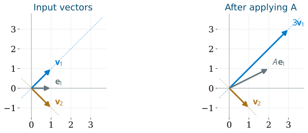

Eigenvalues and Eigenvectors
Anton, Rorres, & Kaul Ch. 5
October 27, 2026
Choose directions that turn a matrix action into separate scalar actions
\(\mat{A}\mat{P}=\mat{P}\mat{D},\qquad \vct{x}=\mat{P}\vct{c}\longmapsto\mat{A}\vct{x}=\mat{P}\mat{D}\vct{c}\)
Which lines through the origin does a matrix send into themselves?
For a square matrix \(\mat{A}\), an eigenvector is a nonzero vector \(\vct{v}\) satisfying
\[ \mat{A}\vct{v}=\lambda\vct{v},\qquad \vct{v}\ne\vct{0} \]
The scalar \(\lambda\) is its eigenvalue
The line is preserved as a subspace; its vectors may stretch, reverse, or collapse
\[ \mat{A}=\begin{bmatrix}2&1\\1&2\end{bmatrix},\qquad \vct{v}_1=\begin{bmatrix}1\\1\end{bmatrix},\quad \vct{v}_2=\begin{bmatrix}1\\-1\end{bmatrix} \]

\[ \mat{A}\vct{v}_1=3\vct{v}_1,\qquad \mat{A}\vct{v}_2=\vct{v}_2 \]
The standard axes mix; the two diagonal directions act independently
For a real eigenvalue and its eigenvector:
| Eigenvalue | Action on that vector |
|---|---|
| \(\lambda>1\) | stretch in the same direction |
| \(0<\lambda<1\) | shrink in the same direction |
| \(\lambda=1\) | leave fixed |
| \(\lambda<0\) | reverse direction and scale length by \(|\lambda|\) |
| \(\lambda=0\) | send to zero |
For a square matrix,
\[ 0\text{ is an eigenvalue}\iff\operatorname{null}(\mat{A})\ne\{\vct{0}\} \iff\mat{A}\text{ is singular} \]
The scale factor belongs to a direction; it need not describe every vector
\(\exstar\) Find eigenvalues and describe their eigendirections geometrically Reflection \(\mat{H}=\begin{bmatrix}1&0\\0&-1\end{bmatrix}\) Projection \(\mat{J}=\begin{bmatrix}1&0\\0&0\end{bmatrix}\) Scaling \(\mat{S}=2\mat{I}_2\): which nonzero vectors are eigenvectors? For the preceding \(\mat{A}=\begin{bmatrix}2&1\\1&2\end{bmatrix}\), is \([2,1]^\top\) an eigenvector?
Turn the preserved-direction question into a homogeneous system
For \(\mat{A}\in\reals^{n\times n}\):
\[ \mat{A}\vct{v}=\lambda\vct{v} \iff(\mat{A}-\lambda\mat{I}_n)\vct{v}=\vct{0} \]
A nonzero solution exists exactly when the shifted matrix is singular:
\[ \det(\mat{A}-\lambda\mat{I}_n)=0 \]
Define the characteristic polynomial
\[ p_{\mat{A}}(\lambda)=\det(\lambda\mat{I}_n-\mat{A}) \]
First solve the scalar polynomial equation; then solve a homogeneous system for each root
Return to \(\mat{A}=\begin{bmatrix}2&1\\1&2\end{bmatrix}\)
\[ p_{\mat{A}}(\lambda) =\det\begin{bmatrix}\lambda-2&-1\\-1&\lambda-2\end{bmatrix} =(\lambda-2)^2-1=(\lambda-3)(\lambda-1) \]
For each eigenvalue, solve a different homogeneous system:
| \(\lambda\) | \(\mat{A}-\lambda\mat{I}\) | Solution condition | Eigenspace basis |
|---|---|---|---|
| \(3\) | \(\begin{bmatrix}-1&1\\1&-1\end{bmatrix}\) | \(v_2=v_1\) | \(\{[1,1]^\top\}\) |
| \(1\) | \(\begin{bmatrix}1&1\\1&1\end{bmatrix}\) | \(v_2=-v_1\) | \(\{[1,-1]^\top\}\) |
The determinant finds the scale factors; null spaces find their directions
For an eigenvalue \(\lambda\), its eigenspace is
\[ E_\lambda=\operatorname{null}(\mat{A}-\lambda\mat{I}) \]
By rank–nullity,
\[ \dim(E_\lambda)=n-\operatorname{rank}(\mat{A}-\lambda\mat{I})\ge1 \]
Eigenvectors exclude zero; the eigenspace includes zero
\[ \mat{B}=\begin{bmatrix}4&1\\0&2\end{bmatrix} \]
\(\exstar\) Use determinants, homogeneous systems, and direct multiplication Find the characteristic polynomial and both eigenvalues Find a basis for each eigenspace Check \(\mat{B}\vct{v}=\lambda\vct{v}\) for each chosen basis vector Does \(\vct{e}_2\) have to be an eigenvector because \(\mat{B}\) is triangular?
Count all \(n\) eigenvalues with algebraic multiplicity, allowing complex roots
\[ \operatorname{tr}(\mat{A})=\sum_{j=1}^n\lambda_j, \qquad \det(\mat{A})=\prod_{j=1}^n\lambda_j \]
For \(\mat{A}=\begin{bmatrix}2&1\\1&2\end{bmatrix}\): \(\quad3+1=4\), \(\quad3\cdot1=3\)
For any triangular matrix, the characteristic determinant is a product:
\[ p_{\mat{U}}(\lambda)=\prod_{j=1}^n(\lambda-u_{jj}) \]
Triangular eigenvalues are the diagonal entries; trace and determinant are checks, not a general eigensolver
When do preserved directions provide enough coordinates for every vector?
Put \(n\) independent eigenvectors into \(\mat{P}\), with matching eigenvalues in \(\mat{D}\):
\[ \mat{P}=[\vct{v}_1\ \cdots\ \vct{v}_n],\qquad \mat{D}=\operatorname{diag}(\lambda_1,\ldots,\lambda_n) \]
Multiplication by columns gives
\[ \mat{A}\mat{P}=[\lambda_1\vct{v}_1\ \cdots\ \lambda_n\vct{v}_n] =\mat{P}\mat{D} \]
Independence makes \(\mat{P}\) invertible:
\[ \boxed{\mat{P}^{-1}\mat{A}\mat{P}=\mat{D}},\qquad \mat{A}=\mat{P}\mat{D}\mat{P}^{-1} \]
\(\mat{A}\) is diagonalizable over the chosen field exactly when it has an eigenvector basis there
For \(\mat{A}=\begin{bmatrix}2&1\\1&2\end{bmatrix}\), choose
\[ \mat{P}=\begin{bmatrix}1&1\\1&-1\end{bmatrix},\qquad \mat{P}^{-1}=\tfrac12\begin{bmatrix}1&1\\1&-1\end{bmatrix},\qquad \mat{D}=\begin{bmatrix}3&0\\0&1\end{bmatrix} \]
For \(\vct{x}=[4,2]^\top\):
\[ \underbrace{\mat{P}^{-1}\vct{x}}_{\text{eigenbasis coordinates}} =\begin{bmatrix}3\\1\end{bmatrix} \quad\xrightarrow{\mat{D}}\quad \begin{bmatrix}9\\1\end{bmatrix} \quad\xrightarrow{\mat{P}}\quad \mat{A}\vct{x}=\begin{bmatrix}10\\8\end{bmatrix} \]
Read coordinates, scale them separately, then reconstruct the output
Eigenvectors belonging to distinct eigenvalues are linearly independent
For two eigenvectors, suppose \(c_1\vct{v}_1+c_2\vct{v}_2=\vct{0}\)
Apply \(\mat{A}\), then subtract \(\lambda_2\) times the original relation:
\[ c_1\lambda_1\vct{v}_1+c_2\lambda_2\vct{v}_2=\vct{0} \quad\implies\quad c_1(\lambda_1-\lambda_2)\vct{v}_1=\vct{0} \]
Since \(\lambda_1\ne\lambda_2\) and \(\vct{v}_1\ne\vct{0}\), \(c_1=0\), then \(c_2=0\)
An \(n\times n\) matrix with \(n\) distinct eigenvalues in the chosen field is diagonalizable there
Two matrices with the same characteristic polynomial \((\lambda-2)^2\):
\[ \mat{S}=\begin{bmatrix}2&0\\0&2\end{bmatrix} \]
\(\mat{S}-2\mat{I}=\mat{0}\)
\(E_2=\reals^2\): two independent eigenvectors
Diagonalizable
\[ \mat{J}=\begin{bmatrix}2&1\\0&2\end{bmatrix} \]
\(\mat{J}-2\mat{I}=\begin{bmatrix}0&1\\0&0\end{bmatrix}\)
\(E_2=\operatorname{span}\{\vct{e}_1\}\): only one independent eigenvector
Not diagonalizable
Repeated roots permit diagonalization, but do not guarantee enough eigenvectors
For each eigenvalue \(\lambda\):
| Multiplicity | What it counts |
|---|---|
| Algebraic, \(a_\lambda\) | repetitions of the root in \(p_{\mat{A}}\) |
| Geometric, \(g_\lambda\) | \(\dim(E_\lambda)\): independent eigenvectors available |
\[ 1\le g_\lambda\le a_\lambda \]
Over a field in which \(p_{\mat{A}}\) splits into linear factors:
\[ \mat{A}\text{ diagonalizable} \iff\sum_{\text{distinct }\lambda}g_\lambda=n \iff g_\lambda=a_\lambda\text{ for every }\lambda \]
Collect a basis of each eigenspace; diagonalization needs \(n\) independent columns altogether
For a square matrix over the chosen field:
If the characteristic polynomial does not split in the field, diagonalization there is impossible
Verification by \(\mat{A}\mat{P}=\mat{P}\mat{D}\) avoids computing an inverse
\[ \mat{B}=\begin{bmatrix}4&1\\0&2\end{bmatrix},\qquad \mat{C}=\begin{bmatrix}2&0&0\\0&2&0\\0&0&3\end{bmatrix} \]
\(\exstar\) Build and verify eigenvector bases Use the eigenspaces already found for \(\mat{B}\) to construct \(\mat{P},\mat{D}\); verify \(\mat{B}\mat{P}=\mat{P}\mat{D}\) For \(\mat{C}\), give both multiplicities for each eigenvalue and construct an eigenvector basis Explain why \(\mat{C}\) disproves “diagonalizable means all eigenvalues are distinct”
\[ \mat{F}=\begin{bmatrix}2&1&0\\0&2&0\\0&0&3\end{bmatrix} \]
\(\exstar\) The diagonal entries give eigenvalues 2 and 3 Find the algebraic multiplicity and an eigenspace basis for each How many independent eigenvectors are available altogether? Can a different choice of vectors inside those same eigenspaces produce an eigenvector basis?
Matrices \(\mat{A}\) and \(\mat{B}\) are similar when
\[ \mat{B}=\mat{P}^{-1}\mat{A}\mat{P},\qquad\mat{P}\text{ invertible} \]
Their characteristic polynomials agree:
\[ \det(\lambda\mat{I}-\mat{B}) =\det\bigl(\mat{P}^{-1}(\lambda\mat{I}-\mat{A})\mat{P}\bigr) =\det(\lambda\mat{I}-\mat{A}) \]
Diagonalization is similarity to a diagonal matrix; ordinary row reduction is a different operation
A real matrix may need complex coordinates to reveal its eigenvectors
\[ \mat{R}=\begin{bmatrix}0&-1\\1&0\end{bmatrix},\qquad \mat{R}\begin{bmatrix}x\\y\end{bmatrix}=\begin{bmatrix}-y\\x\end{bmatrix} \]
Every nonzero real vector turns through \(90^\circ\); none stays on its line
\[ p_{\mat{R}}(\lambda)=\lambda^2+1 \]
Always name the scalar field when deciding whether an eigenvector basis exists
For the quarter-turn matrix, direct multiplication gives
\[ \mat{R}\begin{bmatrix}1\\-i\end{bmatrix} =\begin{bmatrix}i\\1\end{bmatrix} =i\begin{bmatrix}1\\-i\end{bmatrix},\qquad \mat{R}\begin{bmatrix}1\\i\end{bmatrix} =\begin{bmatrix}-i\\1\end{bmatrix} =-i\begin{bmatrix}1\\i\end{bmatrix} \]
Thus, over \(\mathbb{C}\),
\[ \mat{P}=\begin{bmatrix}1&1\\-i&i\end{bmatrix},\qquad \mat{D}=\begin{bmatrix}i&0\\0&-i\end{bmatrix},\qquad \mat{R}=\mat{P}\mat{D}\mat{P}^{-1} \]
For real \(x,y\):
\[ \begin{bmatrix}x\\y\end{bmatrix} =\frac{x+iy}{2}\begin{bmatrix}1\\-i\end{bmatrix} +\frac{x-iy}{2}\begin{bmatrix}1\\i\end{bmatrix} \]
Conjugate coefficients and eigenvectors reconstruct a real vector
If \(\mat{A}\) has real entries and \(\mat{A}\vct{v}=\lambda\vct{v}\), conjugate both sides:
\[ \mat{A}\overline{\vct{v}}=\overline{\lambda}\,\overline{\vct{v}} \]
Nonreal eigenvalues and their eigenvectors occur in conjugate pairs
For \(\lambda=a+ib\), \(\vct{v}=\vct{p}+i\vct{q}\), equate real and imaginary parts:
\[ \mat{A}\vct{p}=a\vct{p}-b\vct{q},\qquad \mat{A}\vct{q}=b\vct{p}+a\vct{q} \]
When \(b\ne0\), \(\vct{p},\vct{q}\) span a real invariant plane
A complex pair describes a real two-dimensional action, even without real eigenvectors in that plane
\[ \mat{B}=\begin{bmatrix}1&-1\\1&1\end{bmatrix} \]
\(\exstar\) Compare real geometry with complex coordinates Find the characteristic polynomial, eigenvalues, and an eigenvector for each Is \(\mat{B}\) diagonalizable over \(\reals\)? Over \(\mathbb{C}\)? Compute \(\mat{B}\vct{e}_1\) and \(\mat{B}\vct{e}_2\); identify the rotation angle and length factor
Repeated matrix actions become repeated scalar actions in an eigenvector basis
If \(\mat{A}=\mat{P}\mat{D}\mat{P}^{-1}\), cancellation gives, for integers \(k\ge0\),
\[ \mat{A}^k=\mat{P}\mat{D}^k\mat{P}^{-1},\qquad \mat{D}^k=\operatorname{diag}(\lambda_1^k,\ldots,\lambda_n^k) \]
If \(\vct{x}_0=\sum_{j=1}^n c_j\vct{v}_j\), then
\[ \vct{x}_k=\mat{A}^k\vct{x}_0 =\sum_{j=1}^n c_j\lambda_j^k\vct{v}_j \]
Each step: 20% of group 1 moves to group 2; 30% of group 2 moves to group 1
\[ \vct{x}_{k+1}=\mat{A}\vct{x}_k,\qquad \mat{A}=\begin{bmatrix}0.8&0.3\\0.2&0.7\end{bmatrix},\qquad \vct{x}_0=\begin{bmatrix}100\\0\end{bmatrix} \]
Columns describe where each group’s population goes; each column sums to 1
\[ p_{\mat{A}}(\lambda)=\lambda^2-1.5\lambda+0.5 =(\lambda-1)(\lambda-0.5) \]
\[ \lambda_1=1:\ \vct{v}_1=\begin{bmatrix}3\\2\end{bmatrix},\qquad \lambda_2=\tfrac12:\ \vct{v}_2=\begin{bmatrix}1\\-1\end{bmatrix} \]
One direction persists; the other describes a redistribution that decays
Decompose the initial population into eigenvectors:
\[ \begin{bmatrix}100\\0\end{bmatrix} =20\begin{bmatrix}3\\2\end{bmatrix} +40\begin{bmatrix}1\\-1\end{bmatrix} \]
Then
\[ \vct{x}_k =20\begin{bmatrix}3\\2\end{bmatrix} +40\left(\tfrac12\right)^k\begin{bmatrix}1\\-1\end{bmatrix} =\begin{bmatrix}60+40(1/2)^k\\40-40(1/2)^k\end{bmatrix} \]
\[ \vct{x}_1=\begin{bmatrix}80\\20\end{bmatrix},\qquad \vct{x}_2=\begin{bmatrix}70\\30\end{bmatrix},\qquad \vct{x}_k\longrightarrow\begin{bmatrix}60\\40\end{bmatrix} \]
The eigenvalue 1 gives the equilibrium proportions; \(1/2\) gives the decay factor per step
\(\exstar\) Use the eigenvectors before multiplying matrices repeatedly For the population matrix, start with \([0,100]^\top\); find \(\vct{x}_k\) and its limit For \(\mat{A}=\begin{bmatrix}2&1\\1&2\end{bmatrix}\) and \(\vct{x}_0=[1,0]^\top\), find \(\mat{A}^k\vct{x}_0\) For that same \(\mat{A}\), why does \(\vct{x}_0=[1,-1]^\top\) stay fixed even though 3 is an eigenvalue?
Symmetry guarantees a real eigenbasis with especially simple geometry
Let \(\mat{A}=\mat{A}^{\mathsf T}\) be real, with \(\mat{A}\vct{u}=\lambda\vct{u}\) and \(\mat{A}\vct{v}=\mu\vct{v}\)
Symmetry lets the action move across the dot product:
\[ \lambda\vct{u}^{\mathsf T}\vct{v} =(\mat{A}\vct{u})^{\mathsf T}\vct{v} =\vct{u}^{\mathsf T}\mat{A}\vct{v} =\mu\vct{u}^{\mathsf T}\vct{v} \]
Thus
\[ (\lambda-\mu)\vct{u}^{\mathsf T}\vct{v}=0 \]
Distinct eigenvalues of a real symmetric matrix have perpendicular eigenvectors
Within a repeated eigenspace, perpendicular basis vectors must still be chosen
Spectral theorem: every real symmetric \(n\times n\) matrix has a real orthonormal eigenbasis
Put its unit eigenvectors in \(\mat{Q}\), in the same order as \(\mat{D}\):
\[ \mat{Q}^{\mathsf T}\mat{Q}=\mat{I},\qquad \mat{Q}^{-1}=\mat{Q}^{\mathsf T},\qquad \boxed{\mat{A}=\mat{Q}\mat{D}\mat{Q}^{\mathsf T}} \]
This is orthogonal diagonalization
A real matrix is orthogonally diagonalizable exactly when it is symmetric
For \(\mat{A}=\begin{bmatrix}2&1\\1&2\end{bmatrix}\):
\[ \vct{q}_1=\tfrac1{\sqrt2}\begin{bmatrix}1\\1\end{bmatrix},\qquad \vct{q}_2=\tfrac1{\sqrt2}\begin{bmatrix}1\\-1\end{bmatrix},\qquad \mat{Q}=\tfrac1{\sqrt2}\begin{bmatrix}1&1\\1&-1\end{bmatrix} \]
\[ \mat{Q}^{\mathsf T}\mat{A}\mat{Q}=\begin{bmatrix}3&0\\0&1\end{bmatrix},\qquad \mat{A}=3\vct{q}_1\vct{q}_1^{\mathsf T}+\vct{q}_2\vct{q}_2^{\mathsf T} \]
Each \(\vct{q}_j\vct{q}_j^{\mathsf T}\vct{x}\) projects onto one unit eigendirection
Resolve the input into perpendicular components, then scale each by its eigenvalue
\[ \mat{C}=\begin{bmatrix}5&2\\2&5\end{bmatrix},\qquad \mat{B}=\begin{bmatrix}4&1\\0&2\end{bmatrix} \]
\(\exstar\) Distinguish an eigenbasis from an orthonormal eigenbasis Find an orthogonal \(\mat{Q}\) and diagonal \(\mat{D}\) with \(\mat{C}=\mat{Q}\mat{D}\mat{Q}^{\mathsf T}\) Write \(\mat{C}\) as a sum of scaled orthogonal projectors The matrix \(\mat{B}\) is diagonalizable; can it be orthogonally diagonalized over \(\reals\)? Explain
In an eigenvector basis, \(\vct{x}=\sum_j c_j\vct{v}_j\) becomes \(\mat{A}\vct{x}=\sum_j\lambda_jc_j\vct{v}_j\)
The coordinate method now explains both a single action and its repeated effects
How do we measure lengths and angles for abstract vectors, and choose perpendicular coordinates?
Inner products lead to orthogonal projection, Gram–Schmidt, QR, and least squares
© 2026 Fred J. Hickernell · Illinois Tech · assisted by ChatGPT and Codex · Eigenvalues · MATH 332 — Fall 2026 Website · \(\exstar\) = exercise